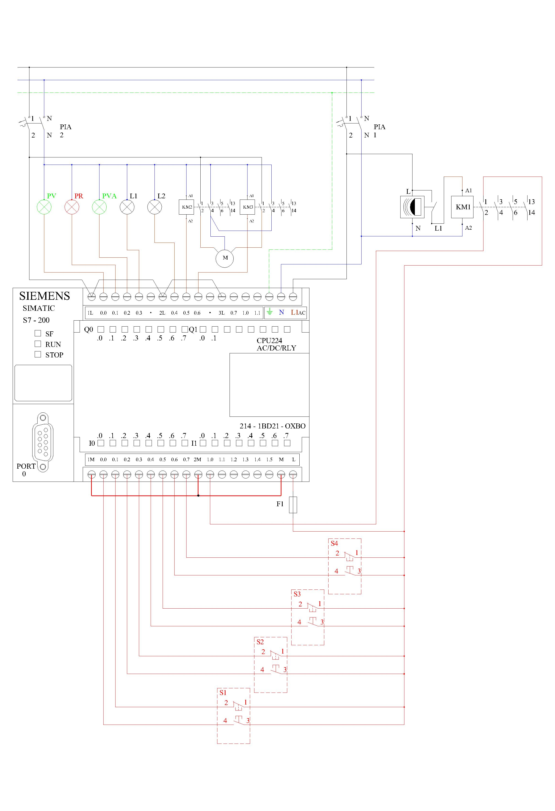

5.- Vivienda domótica controlada mediante Autómata Programable (PLC)
1. Asignación de señales en el autómata programable.
- I0.0: Pulsador marcha (S1) — contacto NO.
- I0.1: Pulsador paro (S1) — contacto NC.
- I0.2: Pulsador marcha (S2) — contacto NO.
- I0.3: Pulsador paro (S2) — contacto NC.
- I0.4: Pulsador marcha (S3) — contacto NO.
- I0.5: Pulsador paro (S3) — contacto NC.
- I0.6: Pulsador marcha (S4) — contacto NO.
- I0.7: Pulsador paro (S4) — contacto NC.
- I1.0: Detector de movimiento (DM) — señal ADAPTADA del detector.
- Q0.0: Piloto verde (PV).
- Q0.1: Piloto rojo (PR).
- Q0.2: Piloto verde 2 (PVA). Piloto Verde Alarma
- Q0.3: Alarma/lámpara (L1).
- Q0.4: Lámparas (L2).
- Q0.5: Contactor motor subir.
- Q0.6: Contactor motor bajar.
Entradas digitales
Salidas digitales
Esquema multifilar de la práctica 5.

×